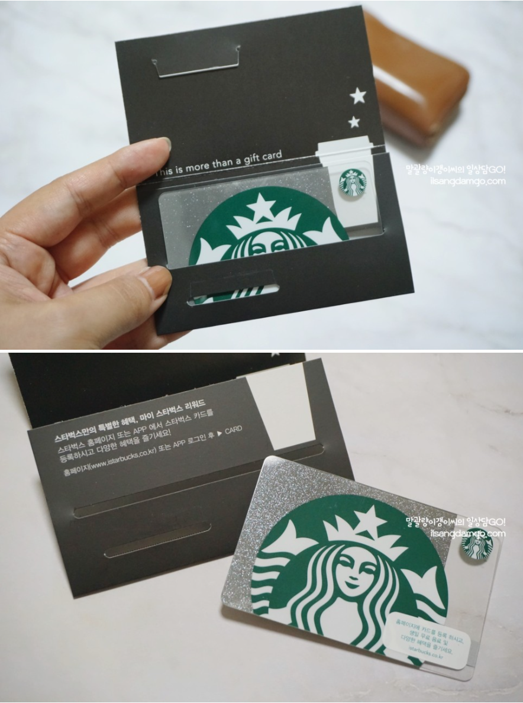

대제목
Hello World! rokag3-gb.github.io 블로그를 개설하였습니다.
GarlicBread IT 입니다.
널리 많은 분들이 보셨으면 좋겠습니다.
중간 제목
[Params.style.vars] highlightColor = “#125ea6” # “#e22d30” # Override highlight color
[Params.thumbnail] visibility = [“list”, “post”] # Control thumbnail visibility
‘‘sql select getdate(); '’
상세 제목

[Params.sidebar] home = “right” # Configure layout for home page list = “left” # Configure layout for list pages single = true # Configure layout for single pages #widgets = [“search”, “recent”, “categories”, “taglist”, “social”, “languages”] widgets = [“recent”, “categories”, “taglist”, “social”, “languages”]
[Params.widgets] recent_num = 5 # Set the number of articles in the “Recent articles” widget categories_counter = true # Enable counter for each category in “Categories” widget tags_counter = true # Enable counter for each tag in “Tags” widget